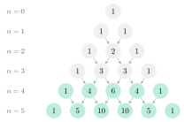

The Binomial TheoremNhị thức Newton
Grade 10 · Topic: CombinatoricsLớp 10 · Chủ đề: Đại số tổ hợp
1Lesson IntroductionGiới thiệu bài học
Learning goalsMục tiêu bài học
By the end of this lesson you can:
Sau bài học này, em có thể:
recognise the binomial expansion of \((a+b)^4\) and \((a+b)^5\);
nhận biết công thức nhị thức Newton khai triển \((a+b)^4\), \((a+b)^5\);
read the coefficients from combinations or Pascal's triangle;
đọc hệ số nhị thức bằng tổ hợp hoặc tam giác Pascal;
expand binomials and find a given coefficient or term;
khai triển nhị thức, tìm hệ số hoặc số hạng theo yêu cầu;
use expansions to approximate numbers (compound interest).
dùng khai triển để tính gần đúng (lãi kép).
2Mathematical VocabularyTừ vựng Toán học
binomial theorem – \((a+b)^n=\sum_{k=0}^{n}C_n^ka^{n-k}b^k\) (here \(n=4,5\)).
công thức nhị thức Newton – \((a+b)^n=\sum_{k=0}^{n}C_n^ka^{n-k}b^k\) (ở đây \(n=4,5\)).
binomial coefficient – the number \(C_n^k\) in front of \(a^{n-k}b^k\).
hệ số nhị thức – số \(C_n^k\) đứng trước \(a^{n-k}b^k\).
Pascal's triangle – a triangle of numbers in which each entry is the sum of the two above it; row \(n\) lists \(C_n^0,\dots,C_n^n\).
tam giác Pascal – bảng số hình tam giác, mỗi số bằng tổng hai số ngay trên nó; hàng \(n\) gồm \(C_n^0,\dots,C_n^n\).
3Useful English PhrasesCụm từ tiếng Anh thường gặp
Expand the binomial.
Khai triển nhị thức.
The coefficient of x cubed is ten.
Hệ số của \(x^3\) bằng 10.
The expansion has five terms.
Khai triển có năm số hạng.
The powers of a go down and the powers of b go up.
Số mũ của \(a\) giảm dần, số mũ của \(b\) tăng dần.
Watch the sign of each term.
Chú ý dấu của từng số hạng.
4Prerequisite ReviewÔn tập kiến thức nền
From Bài 24: \(C_n^k=\dfrac{n!}{k!(n-k)!}\), \(C_n^k=C_n^{n-k}\). From Grade 8: \((a+b)^2=a^2+2ab+b^2\), \((a+b)^3=a^3+3a^2b+3ab^2+b^3\).
Từ Bài 24: \(C_n^k=\dfrac{n!}{k!(n-k)!}\), \(C_n^k=C_n^{n-k}\). Từ lớp 8: \((a+b)^2=a^2+2ab+b^2\), \((a+b)^3=a^3+3a^2b+3ab^2+b^3\).
5TheoryLý thuyết
5.1 Expanding \((a+b)^4\) and \((a+b)^5\)Khai triển \((a+b)^4\) và \((a+b)^5\)
FormulasCông thức
\((a+b)^4=a^4+4a^3b+6a^2b^2+4ab^3+b^4\).
\((a+b)^4=a^4+4a^3b+6a^2b^2+4ab^3+b^4\).
\((a+b)^5=a^5+5a^4b+10a^3b^2+10a^2b^3+5ab^4+b^5\).
\((a+b)^5=a^5+5a^4b+10a^3b^2+10a^2b^3+5ab^4+b^5\).
Why: expanding \((a+b)(a+b)\cdots(a+b)\), the term \(a^{n-k}b^k\) appears once for each way of choosing the \(k\) brackets that give \(b\): \(C_n^k\) times. So the coefficients are \(C_n^0, C_n^1,\dots,C_n^n\).
Vì sao: khi nhân \((a+b)(a+b)\cdots(a+b)\), số hạng \(a^{n-k}b^k\) xuất hiện mỗi lần ta chọn \(k\) ngoặc lấy \(b\): đúng \(C_n^k\) lần. Vậy các hệ số là \(C_n^0, C_n^1,\dots,C_n^n\).

RemarksNhận xét
\((a+b)^n\) has \(n+1\) terms; powers of \(a\) decrease from \(n\) to 0, powers of \(b\) increase from 0 to \(n\); in every term the exponents add up to \(n\).
\((a+b)^n\) có \(n+1\) số hạng; số mũ của \(a\) giảm từ \(n\) về 0, của \(b\) tăng từ 0 đến \(n\); trong mỗi số hạng tổng hai số mũ bằng \(n\).
The term containing \(b^k\) is \(C_n^ka^{n-k}b^k\) (term number \(k+1\)).
Số hạng chứa \(b^k\) là \(C_n^ka^{n-k}b^k\) (số hạng thứ \(k+1\)).
For \((a-b)^n\) the signs alternate: \(+,-,+,\dots\). Putting \(a=b=1\): \(C_n^0+\dots+C_n^n=2^n\).
Với \((a-b)^n\) các dấu đan xen \(+,-,+,\dots\). Thay \(a=b=1\): \(C_n^0+\dots+C_n^n=2^n\).
Watch out!Lưu ý
Raise the whole term to the power: \((2x)^3=8x^3\), not \(2x^3\); \((-1)^3=-1\).
Nâng cả số hạng lên lũy thừa: \((2x)^3=8x^3\), không phải \(2x^3\); \((-1)^3=-1\).
6Worked ExamplesVí dụ có lời giải
ExampleVí dụ 1BasicCơ bản – Expanding \((x+2)^4\)Khai triển \((x+2)^4\)
Expand \((x+2)^4\).
Khai triển \((x+2)^4\).
Analysis: \(a=x\), \(b=2\), coefficients 1, 4, 6, 4, 1.
Phân tích: \(a=x\), \(b=2\), hệ số 1, 4, 6, 4, 1.
\(x^4+4x^3\cdot2+6x^2\cdot2^2+4x\cdot2^3+2^4\).
\(x^4+4x^3\cdot2+6x^2\cdot2^2+4x\cdot2^3+2^4\).
\(x^4+8x^3+24x^2+32x+16\).
\(x^4+8x^3+24x^2+32x+16\).
ExampleVí dụ 2BasicCơ bản – Expanding \((2x-1)^5\)Khai triển \((2x-1)^5\)
Expand \((2x-1)^5\).
Khai triển \((2x-1)^5\).
Analysis: \(a=2x\), \(b=-1\); signs alternate.
Phân tích: \(a=2x\), \(b=-1\); dấu đan xen.
\((2x)^5-5(2x)^4+10(2x)^3-10(2x)^2+5(2x)-1\).
\((2x)^5-5(2x)^4+10(2x)^3-10(2x)^2+5(2x)-1\).
\(32x^5-80x^4+80x^3-40x^2+10x-1\).
\(32x^5-80x^4+80x^3-40x^2+10x-1\).
ExampleVí dụ 3IntermediateTrung bình – One coefficientTìm một hệ số
Find the coefficient of \(x^3\) in \((3x-2)^5\).
Tìm hệ số của \(x^3\) trong khai triển \((3x-2)^5\).
Analysis: The term is \(C_5^k(3x)^{5-k}(-2)^k\); need \(5-k=3\).
Phân tích: Số hạng tổng quát \(C_5^k(3x)^{5-k}(-2)^k\); cần \(5-k=3\).
\(k=2\): \(C_5^2\cdot3^3\cdot(-2)^2=10\cdot27\cdot4\).
\(k=2\): \(C_5^2\cdot3^3\cdot(-2)^2=10\cdot27\cdot4\).
1080.
1080.
ExampleVí dụ 4IntermediateTrung bình – Constant termSố hạng không chứa \(x\)
Find the term without \(x\) in \(\left(x+\dfrac2x\right)^4\).
Tìm số hạng không chứa \(x\) trong khai triển \(\left(x+\dfrac2x\right)^4\).
Analysis: \(C_4^kx^{4-k}\left(\dfrac2x\right)^k=C_4^k2^kx^{4-2k}\).
Phân tích: \(C_4^kx^{4-k}\left(\dfrac2x\right)^k=C_4^k2^kx^{4-2k}\).
\(4-2k=0\Rightarrow k=2\): \(C_4^2\cdot2^2=6\cdot4\).
\(4-2k=0\Rightarrow k=2\): \(C_4^2\cdot2^2=6\cdot4\).
24.
24.
ExampleVí dụ 5AdvancedNâng cao – Compound interestLãi kép
You deposit 100 million VND at 2% per year, compound interest, for 5 years. Use the first three terms of \((1+0{,}02)^5\) to estimate the final amount, and compare with the exact value.
Gửi 100 triệu đồng, lãi kép 2%/năm trong 5 năm. Dùng ba số hạng đầu của khai triển \((1+0{,}02)^5\) để ước tính số tiền nhận được và so sánh với giá trị đúng.
Analysis: Amount \(=100(1+0{,}02)^5\).
Phân tích: Số tiền \(=100(1+0{,}02)^5\).
\((1+0{,}02)^5\approx1+5\cdot0{,}02+10\cdot0{,}02^2=1{,}104\).
\((1+0{,}02)^5\approx1+5\cdot0{,}02+10\cdot0{,}02^2=1{,}104\).
Estimate 110,4 million; exact \(1{,}02^5=1{,}10408\ldots\): 110,408 million. The error is under 10 000 VND.
Ước tính 110,4 triệu; giá trị đúng \(1{,}02^5=1{,}10408\ldots\): 110,408 triệu. Sai số dưới 10 000 đồng.
About 110,4 million VND.
Khoảng 110,4 triệu đồng.
7PracticeBài tập luyện tập
A. Multiple ChoiceA. Trắc nghiệm nhiều lựa chọn
The coefficient of \(x^{3}\) in \((2x+3)^4\) is…
Hệ số của \(x^{3}\) trong khai triển \((2x+3)^4\) là…
Answer: b. Term \(C_{4}^{1}(2x)^{3}(3)^{1}\).
Đáp án b. Số hạng \(C_{4}^{1}(2x)^{3}(3)^{1}\).
The sum of the coefficients of \((2x-3)^5\) is…
Tổng các hệ số trong khai triển \((2x-3)^5\) là…
Answer: a. Put \(x=1\).
Đáp án a. Thay \(x=1\): \((2-3)^{5}=-1\).
The middle term of \((x+3)^4\) is…
Số hạng chính giữa của khai triển \((x+3)^4\) là…
Answer: c. Third of five terms.
Đáp án c. Số hạng thứ ba trong năm số hạng: \(C_4^2(1x)^2(3)^2\).
B. True or FalseB. Đúng hoặc sai
In \((x-1)^5\) the coefficient of \(x^2\) is \(-10\).
Trong khai triển \((x-1)^5\), hệ số của \(x^2\) bằng \(-10\).
Expand or use \(C_n^k\).
Khai triển hoặc dùng \(C_n^k\) để kiểm tra.
The term without \(x\) in \(\left(x+\dfrac{3}{x}\right)^4\) is 54.
Số hạng không chứa \(x\) trong khai triển \(\left(x+\dfrac{3}{x}\right)^4\) bằng 54.
\(k=2\): \(C_4^2\cdot(3)^2=54\).
\(k=2\): \(C_4^2\cdot(3)^2=54\).
C. Short AnswerC. Trả lời ngắn
Find the coefficient of \(x^{2}\) in \((x+2)^5\).
Tìm hệ số của \(x^{2}\) trong khai triển \((x+2)^5\).
Enter a number.
Nhập một số.
\(C_{5}^{2}\cdot1^{2}\cdot(2)^{3}\).
\(C_{5}^{2}\cdot1^{2}\cdot(2)^{3}=80\).
Deposit 100 million VND at 2% per year compound interest for 5 years. Using the first two terms of the binomial expansion, estimate the final amount (million VND).
Gửi 100 triệu đồng, lãi kép 2%/năm trong 5 năm. Dùng hai số hạng đầu của khai triển nhị thức, ước tính số tiền nhận được (triệu đồng).
Enter a number.
Nhập một số.
\((1+x)^n\approx1+nx\).
\(100(1+\dfrac{1}{50})^{5}\approx100(1+5\cdot\dfrac{1}{50})=110\).
A. Multiple ChoiceA. Trắc nghiệm nhiều lựa chọn
The coefficient of \(x^{2}\) in \((3x-2)^5\) is…
Hệ số của \(x^{2}\) trong khai triển \((3x-2)^5\) là…
Answer: d. Term \(C_{5}^{3}(3x)^{2}(-2)^{3}\).
Đáp án d. Số hạng \(C_{5}^{3}(3x)^{2}(-2)^{3}\).
The sum of the coefficients of \((3x-2)^4\) is…
Tổng các hệ số trong khai triển \((3x-2)^4\) là…
Answer: d. Put \(x=1\).
Đáp án d. Thay \(x=1\): \((3-2)^{4}=1\).
The middle term of \((2x-1)^4\) is…
Số hạng chính giữa của khai triển \((2x-1)^4\) là…
Answer: c. Third of five terms.
Đáp án c. Số hạng thứ ba trong năm số hạng: \(C_4^2(2x)^2(-1)^2\).
B. True or FalseB. Đúng hoặc sai
\((x+1)^4=x^4+4x^3+4x^2+4x+1\).
\((x+1)^4=x^4+4x^3+4x^2+4x+1\).
Expand or use \(C_n^k\).
Khai triển hoặc dùng \(C_n^k\) để kiểm tra.
The term without \(x\) in \(\left(x-\dfrac{2}{x}\right)^4\) is 16.
Số hạng không chứa \(x\) trong khai triển \(\left(x-\dfrac{2}{x}\right)^4\) bằng 16.
\(k=2\): \(C_4^2\cdot(-2)^2=24\).
\(k=2\): \(C_4^2\cdot(-2)^2=24\).
C. Short AnswerC. Trả lời ngắn
Find the coefficient of \(x^{3}\) in \((2x-1)^4\).
Tìm hệ số của \(x^{3}\) trong khai triển \((2x-1)^4\).
Enter a number.
Nhập một số.
\(C_{4}^{3}\cdot2^{3}\cdot(-1)^{1}\).
\(C_{4}^{3}\cdot2^{3}\cdot(-1)^{1}=-32\).
Deposit 200 million VND at 1% per year compound interest for 4 years. Using the first two terms of the binomial expansion, estimate the final amount (million VND).
Gửi 200 triệu đồng, lãi kép 1%/năm trong 4 năm. Dùng hai số hạng đầu của khai triển nhị thức, ước tính số tiền nhận được (triệu đồng).
Enter a number.
Nhập một số.
\((1+x)^n\approx1+nx\).
\(200(1+\dfrac{1}{100})^{4}\approx200(1+4\cdot\dfrac{1}{100})=208\).
A. Multiple ChoiceA. Trắc nghiệm nhiều lựa chọn
The coefficient of \(x^{3}\) in \((2x-3)^5\) is…
Hệ số của \(x^{3}\) trong khai triển \((2x-3)^5\) là…
Answer: c. Term \(C_{5}^{2}(2x)^{3}(-3)^{2}\).
Đáp án c. Số hạng \(C_{5}^{2}(2x)^{3}(-3)^{2}\).
The sum of the coefficients of \((x+2)^4\) is…
Tổng các hệ số trong khai triển \((x+2)^4\) là…
Answer: a. Put \(x=1\).
Đáp án a. Thay \(x=1\): \((1+2)^{4}=81\).
The middle term of \((3x+1)^4\) is…
Số hạng chính giữa của khai triển \((3x+1)^4\) là…
Answer: c. Third of five terms.
Đáp án c. Số hạng thứ ba trong năm số hạng: \(C_4^2(3x)^2(1)^2\).
B. True or FalseB. Đúng hoặc sai
\(C_5^0+C_5^1+C_5^2+C_5^3+C_5^4+C_5^5=32\).
\(C_5^0+C_5^1+C_5^2+C_5^3+C_5^4+C_5^5=32\).
Expand or use \(C_n^k\).
Khai triển hoặc dùng \(C_n^k\) để kiểm tra.
The term without \(x\) in \(\left(x+\dfrac{1}{x}\right)^4\) is 6.
Số hạng không chứa \(x\) trong khai triển \(\left(x+\dfrac{1}{x}\right)^4\) bằng 6.
\(k=2\): \(C_4^2\cdot(1)^2=6\).
\(k=2\): \(C_4^2\cdot(1)^2=6\).
C. Short AnswerC. Trả lời ngắn
Find the coefficient of \(x^{4}\) in \((3x+1)^5\).
Tìm hệ số của \(x^{4}\) trong khai triển \((3x+1)^5\).
Enter a number.
Nhập một số.
\(C_{5}^{4}\cdot3^{4}\cdot(1)^{1}\).
\(C_{5}^{4}\cdot3^{4}\cdot(1)^{1}=405\).
Deposit 50 million VND at 3% per year compound interest for 4 years. Using the first two terms of the binomial expansion, estimate the final amount (million VND).
Gửi 50 triệu đồng, lãi kép 3%/năm trong 4 năm. Dùng hai số hạng đầu của khai triển nhị thức, ước tính số tiền nhận được (triệu đồng).
Enter a number.
Nhập một số.
\((1+x)^n\approx1+nx\).
\(50(1+\dfrac{3}{100})^{4}\approx50(1+4\cdot\dfrac{3}{100})=56\).
D. Self-practice: Multiple ChoiceD. Tự luyện: trắc nghiệm
The coefficient of \(x^{2}\) in \((-2x+3)^4\) is…
Hệ số của \(x^{2}\) trong khai triển \((-2x+3)^4\) là…
Answer: d. Term \(C_{4}^{2}(-2x)^{2}(3)^{2}\).
Đáp án d. Số hạng chứa \(x^{2}\): \(C_{4}^{2}(-2x)^{2}(3)^{2}\); hệ số \(=216\).
The constant term in \(\left(x-\dfrac{2}{x}\right)^4\) is…
Số hạng không chứa \(x\) trong khai triển \(\left(x-\dfrac{2}{x}\right)^4\) là…
Answer: a. General term \(C_4^kx^{4-k}\left(\dfrac{-2}{x}\right)^k=C_4^k(-2)^kx^{4-2k}\); \(k=2\).
Đáp án a. Số hạng tổng quát \(C_4^k(-2)^kx^{4-2k}\); không chứa \(x\) khi \(k=2\): \(C_4^2\cdot(-2)^2=24\).
The sum of all coefficients in the expansion of \((3x-1)^4\) is…
Tổng các hệ số trong khai triển \((3x-1)^4\) là…
Answer: d. Put \(x=1\).
Đáp án d. Thay \(x=1\): \((3-1)^4=16\).
In the expansion of \((3x-1)^4\) in \lt b\gt decreasing\lt /b\gt powers of \(x\), the term number 4 is…
Khai triển \((3x-1)^4\) theo lũy thừa \lt b\gt giảm dần\lt /b\gt của \(x\). Số hạng thứ 4 là…
Answer: c. Term \(k+1\): \(C_{4}^{3}(3x)^{1}(-1)^{3}\).
Đáp án c. Số hạng thứ \(k+1\) là \(C_{4}^{k}(3x)^{4-k}(-1)^{k}\) với \(k=3\).
Using the first two terms of the binomial expansion, \((2{,}03)^4\approx\)…
Dùng hai số hạng đầu của khai triển nhị thức, \((2{,}03)^4\approx\)…
Answer: d. \((2+\dfrac{3}{100})^4\approx2^4+4\cdot2^{3}\cdot\dfrac{3}{100}\).
Đáp án d. \((2+\dfrac{3}{100})^4\approx2^4+4\cdot2^{3}\cdot(\dfrac{3}{100})=16{,}96\) (giá trị đúng \(\approx16{,}9818\)).
The middle term of the expansion of \((3x+3)^4\) is…
Số hạng chính giữa của khai triển \((3x+3)^4\) là…
Answer: b. 5 terms; the 3rd: \(C_4^2(3x)^2(3)^2\).
Đáp án b. Có 5 số hạng; số hạng thứ 3: \(C_4^2(3x)^2(3)^2=486x^2\).
In the expansion of \((x+a)^5\) the coefficient of \(x^{4}\) is \(5\), and \(a\) is an integer. Then \(a=\)…
Trong khai triển \((x+a)^5\), hệ số của \(x^{4}\) bằng \(5\), với \(a\) là số nguyên. Khi đó \(a=\)…
Answer: c. \(C_{5}^{4}a^{1}=5\).
Đáp án c. Hệ số của \(x^{4}\) là \(C_{5}^{4}a^{1}=5\cdot a^{1}=5\) nên \(a=1\).
The coefficient of \(x^{2}\) in \((3x-3)^4\) is…
Hệ số của \(x^{2}\) trong khai triển \((3x-3)^4\) là…
Answer: d. Term \(C_{4}^{2}(3x)^{2}(-3)^{2}\).
Đáp án d. Số hạng chứa \(x^{2}\): \(C_{4}^{2}(3x)^{2}(-3)^{2}\); hệ số \(=486\).
D. Self-practice: Multiple ChoiceD. Tự luyện: trắc nghiệm
The coefficient of \(x^{3}\) in \((2x-1)^4\) is…
Hệ số của \(x^{3}\) trong khai triển \((2x-1)^4\) là…
Answer: a. Term \(C_{4}^{3}(2x)^{3}(-1)^{1}\).
Đáp án a. Số hạng chứa \(x^{3}\): \(C_{4}^{3}(2x)^{3}(-1)^{1}\); hệ số \(=-32\).
The constant term in \(\left(x-\dfrac{1}{x}\right)^4\) is…
Số hạng không chứa \(x\) trong khai triển \(\left(x-\dfrac{1}{x}\right)^4\) là…
Answer: a. General term \(C_4^kx^{4-k}\left(\dfrac{-1}{x}\right)^k=C_4^k(-1)^kx^{4-2k}\); \(k=2\).
Đáp án a. Số hạng tổng quát \(C_4^k(-1)^kx^{4-2k}\); không chứa \(x\) khi \(k=2\): \(C_4^2\cdot(-1)^2=6\).
The sum of all coefficients in the expansion of \((-x-1)^5\) is…
Tổng các hệ số trong khai triển \((-x-1)^5\) là…
Answer: b. Put \(x=1\).
Đáp án b. Thay \(x=1\): \((-1-1)^5=-32\).
In the expansion of \((3x+1)^4\) in \lt b\gt decreasing\lt /b\gt powers of \(x\), the term number 1 is…
Khai triển \((3x+1)^4\) theo lũy thừa \lt b\gt giảm dần\lt /b\gt của \(x\). Số hạng thứ 1 là…
Answer: b. Term \(k+1\): \(C_{4}^{0}(3x)^{4}(1)^{0}\).
Đáp án b. Số hạng thứ \(k+1\) là \(C_{4}^{k}(3x)^{4-k}(1)^{k}\) với \(k=0\).
Using the first two terms of the binomial expansion, \((1{,}02)^4\approx\)…
Dùng hai số hạng đầu của khai triển nhị thức, \((1{,}02)^4\approx\)…
Answer: d. \((1+\dfrac{1}{50})^4\approx1^4+4\cdot1^{3}\cdot\dfrac{1}{50}\).
Đáp án d. \((1+\dfrac{1}{50})^4\approx1^4+4\cdot1^{3}\cdot(\dfrac{1}{50})=1{,}08\) (giá trị đúng \(\approx1{,}0824\)).
The middle term of the expansion of \((x-3)^4\) is…
Số hạng chính giữa của khai triển \((x-3)^4\) là…
Answer: b. 5 terms; the 3rd: \(C_4^2(1x)^2(-3)^2\).
Đáp án b. Có 5 số hạng; số hạng thứ 3: \(C_4^2(1x)^2(-3)^2=54x^2\).
In the expansion of \((x+a)^5\) the coefficient of \(x^{3}\) is \(90\), and \(a\) is an integer. Then \(a=\)…
Trong khai triển \((x+a)^5\), hệ số của \(x^{3}\) bằng \(90\), với \(a\) là số nguyên. Khi đó \(a=\)…
Answer: a. \(C_{5}^{3}a^{2}=90\).
Đáp án a. Hệ số của \(x^{3}\) là \(C_{5}^{3}a^{2}=10\cdot a^{2}=90\) nên \(a=-3\) (số mũ chẵn nên \(a=3\) cũng thỏa mãn nhưng không có trong các phương án).
The coefficient of \(x^{3}\) in \((-x+2)^5\) is…
Hệ số của \(x^{3}\) trong khai triển \((-x+2)^5\) là…
Answer: d. Term \(C_{5}^{3}(-1x)^{3}(2)^{2}\).
Đáp án d. Số hạng chứa \(x^{3}\): \(C_{5}^{3}(-1x)^{3}(2)^{2}\); hệ số \(=-40\).
D. Self-practice: Multiple ChoiceD. Tự luyện: trắc nghiệm
The coefficient of \(x^{1}\) in \((2x-3)^4\) is…
Hệ số của \(x^{1}\) trong khai triển \((2x-3)^4\) là…
Answer: d. Term \(C_{4}^{1}(2x)^{1}(-3)^{3}\).
Đáp án d. Số hạng chứa \(x^{1}\): \(C_{4}^{1}(2x)^{1}(-3)^{3}\); hệ số \(=-216\).
The constant term in \(\left(x+\dfrac{2}{x}\right)^4\) is…
Số hạng không chứa \(x\) trong khai triển \(\left(x+\dfrac{2}{x}\right)^4\) là…
Answer: b. General term \(C_4^kx^{4-k}\left(\dfrac{2}{x}\right)^k=C_4^k(2)^kx^{4-2k}\); \(k=2\).
Đáp án b. Số hạng tổng quát \(C_4^k(2)^kx^{4-2k}\); không chứa \(x\) khi \(k=2\): \(C_4^2\cdot(2)^2=24\).
The sum of all coefficients in the expansion of \((-2x-2)^5\) is…
Tổng các hệ số trong khai triển \((-2x-2)^5\) là…
Answer: d. Put \(x=1\).
Đáp án d. Thay \(x=1\): \((-2-2)^5=-1024\).
In the expansion of \((3x-1)^4\) in \lt b\gt decreasing\lt /b\gt powers of \(x\), the term number 3 is…
Khai triển \((3x-1)^4\) theo lũy thừa \lt b\gt giảm dần\lt /b\gt của \(x\). Số hạng thứ 3 là…
Answer: d. Term \(k+1\): \(C_{4}^{2}(3x)^{2}(-1)^{2}\).
Đáp án d. Số hạng thứ \(k+1\) là \(C_{4}^{k}(3x)^{4-k}(-1)^{k}\) với \(k=2\).
Using the first two terms of the binomial expansion, \((2{,}02)^4\approx\)…
Dùng hai số hạng đầu của khai triển nhị thức, \((2{,}02)^4\approx\)…
Answer: a. \((2+\dfrac{1}{50})^4\approx2^4+4\cdot2^{3}\cdot\dfrac{1}{50}\).
Đáp án a. \((2+\dfrac{1}{50})^4\approx2^4+4\cdot2^{3}\cdot(\dfrac{1}{50})=16{,}64\) (giá trị đúng \(\approx16{,}6497\)).
The middle term of the expansion of \((3x-2)^4\) is…
Số hạng chính giữa của khai triển \((3x-2)^4\) là…
Answer: b. 5 terms; the 3rd: \(C_4^2(3x)^2(-2)^2\).
Đáp án b. Có 5 số hạng; số hạng thứ 3: \(C_4^2(3x)^2(-2)^2=216x^2\).
In the expansion of \((x+a)^4\) the coefficient of \(x^{2}\) is \(54\), and \(a\) is an integer. Then \(a=\)…
Trong khai triển \((x+a)^4\), hệ số của \(x^{2}\) bằng \(54\), với \(a\) là số nguyên. Khi đó \(a=\)…
Answer: a. \(C_{4}^{2}a^{2}=54\).
Đáp án a. Hệ số của \(x^{2}\) là \(C_{4}^{2}a^{2}=6\cdot a^{2}=54\) nên \(a=3\) (số mũ chẵn nên \(a=-3\) cũng thỏa mãn nhưng không có trong các phương án).
The coefficient of \(x^{3}\) in \((x-3)^4\) is…
Hệ số của \(x^{3}\) trong khai triển \((x-3)^4\) là…
Answer: b. Term \(C_{4}^{3}(1x)^{3}(-3)^{1}\).
Đáp án b. Số hạng chứa \(x^{3}\): \(C_{4}^{3}(1x)^{3}(-3)^{1}\); hệ số \(=-12\).
8Common MistakesLỗi thường gặp
Not raising the coefficient. \((2x)^3=8x^3\), not \(2x^3\).
Không nâng lũy thừa hệ số. \((2x)^3=8x^3\), không phải \(2x^3\).
Losing the minus signs. In \((x-2)^5\): \(b=-2\), so odd powers of \(b\) are negative.
Mất dấu trừ. Trong \((x-2)^5\): \(b=-2\), lũy thừa bậc lẻ của \(b\) mang dấu âm.
Confusing "term number \(k\)" with \(b^k\). Term number \(k+1\) contains \(b^k\).
Nhầm "số hạng thứ \(k\)" với \(b^k\). Số hạng thứ \(k+1\) chứa \(b^k\).
Giving the term instead of the coefficient. The coefficient of \(x^3\) in \(1080x^3\) is 1080.
Ghi số hạng thay cho hệ số. Hệ số của \(x^3\) trong \(1080x^3\) là 1080.
9Lesson SummaryTổng kết
\((a+b)^4\): 1, 4, 6, 4, 1; \((a+b)^5\): 1, 5, 10, 10, 5, 1 (Pascal's triangle).
\((a+b)^4\): 1, 4, 6, 4, 1; \((a+b)^5\): 1, 5, 10, 10, 5, 1 (tam giác Pascal).
Term with \(b^k\): \(C_n^ka^{n-k}b^k\); \(n+1\) terms; exponents add to \(n\).
Số hạng chứa \(b^k\): \(C_n^ka^{n-k}b^k\); có \(n+1\) số hạng; tổng số mũ bằng \(n\).
Sum of coefficients: put \(x=1\); \((1+x)^n\approx1+nx\) for small \(x\).
Tổng các hệ số: thay \(x=1\); \((1+x)^n\approx1+nx\) khi \(x\) nhỏ.
Key words: binomial theorem, coefficient, term, Pascal's triangle.
Từ cần nhớ: binomial theorem, coefficient, term, Pascal's triangle.